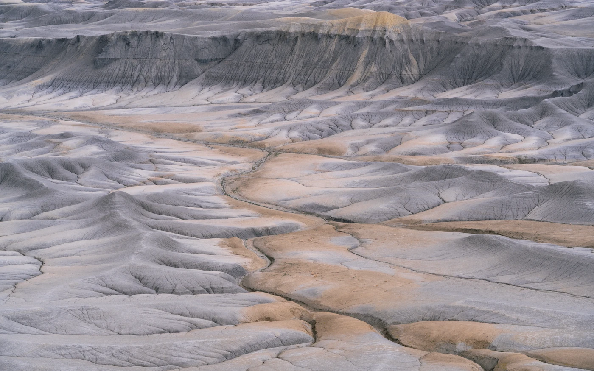
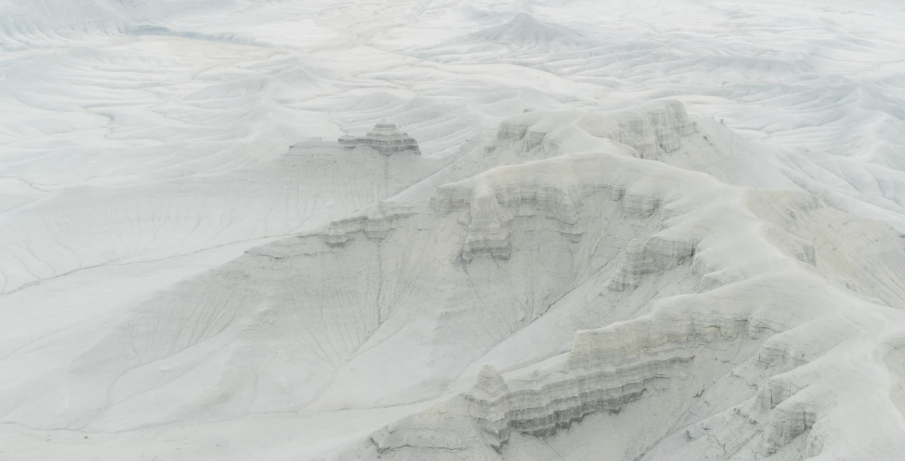
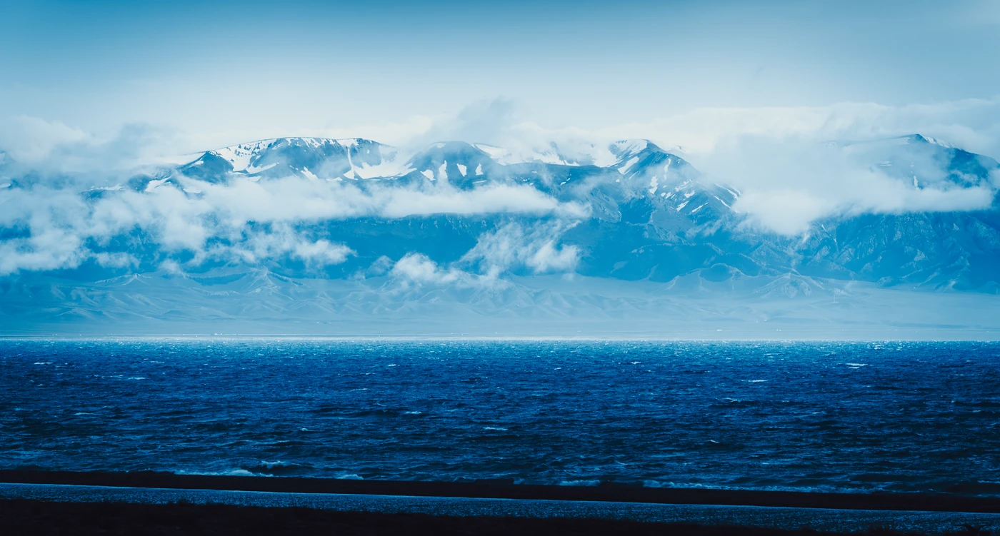
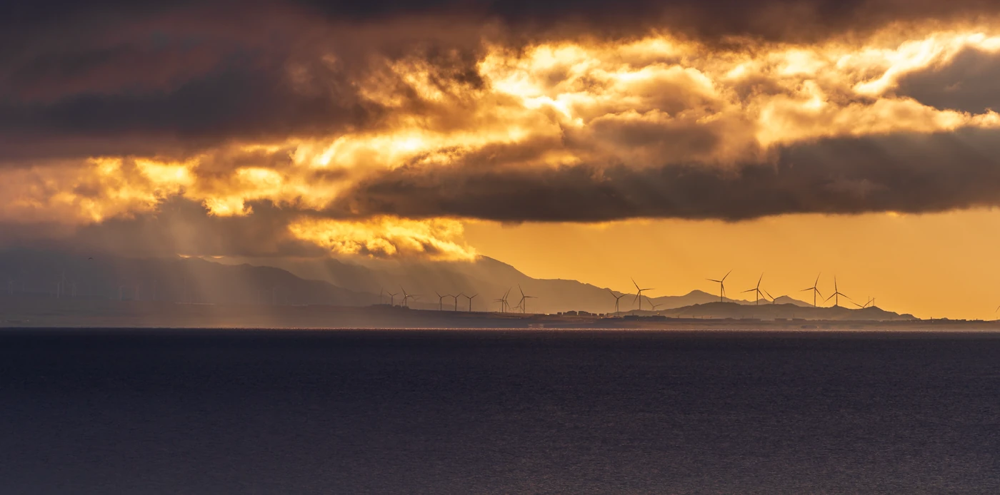
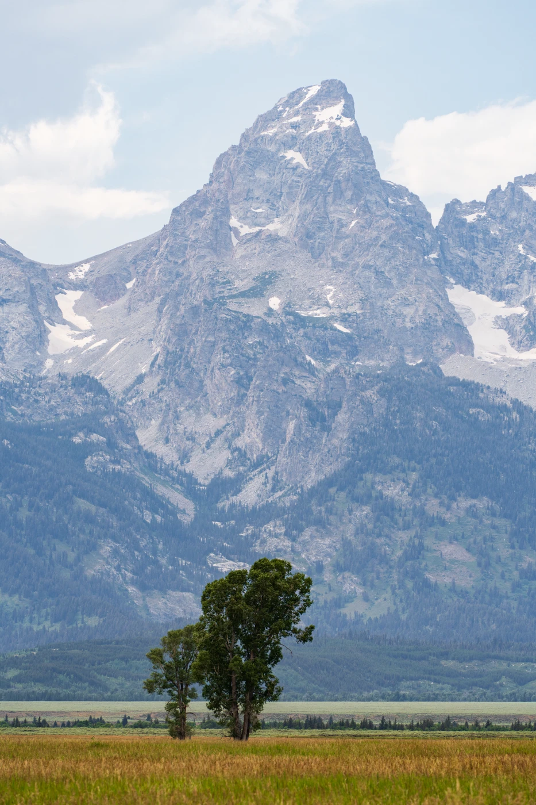
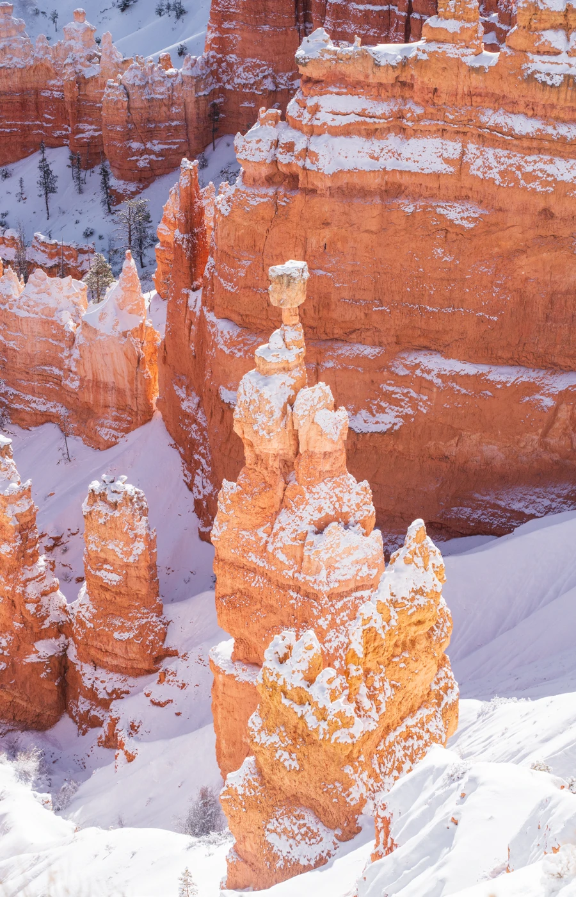
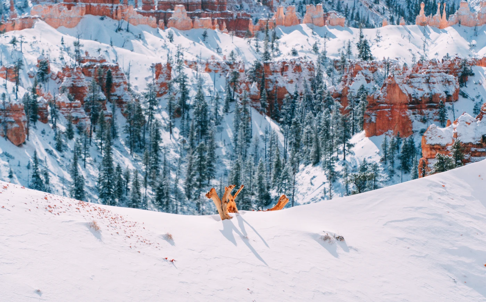
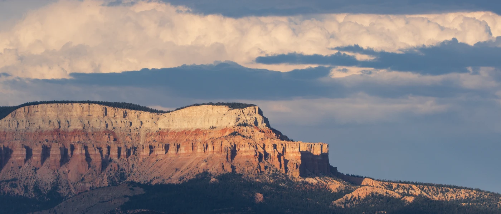
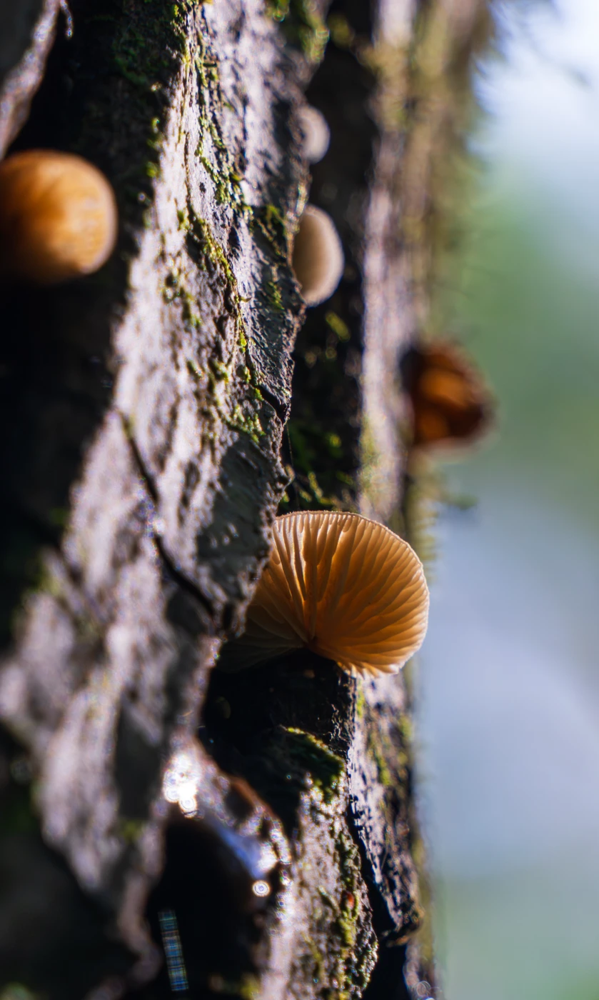

Photography
Land
Light, weather & natural forms























Photographs by Jipeng Li.
Get in touch ↗Photography
Light, weather & natural forms









Photographs by Jipeng Li.
Get in touch ↗